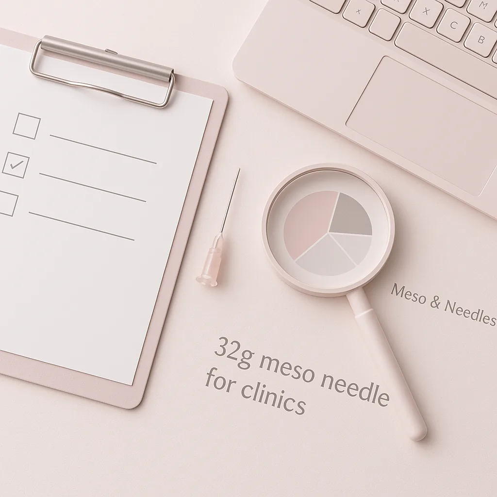
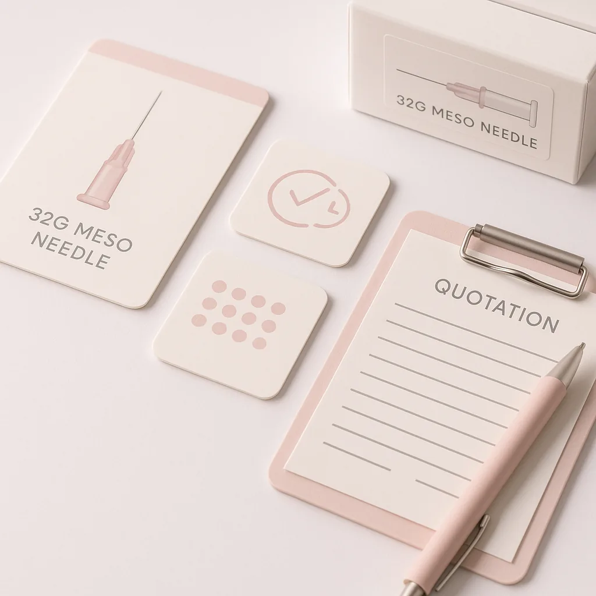
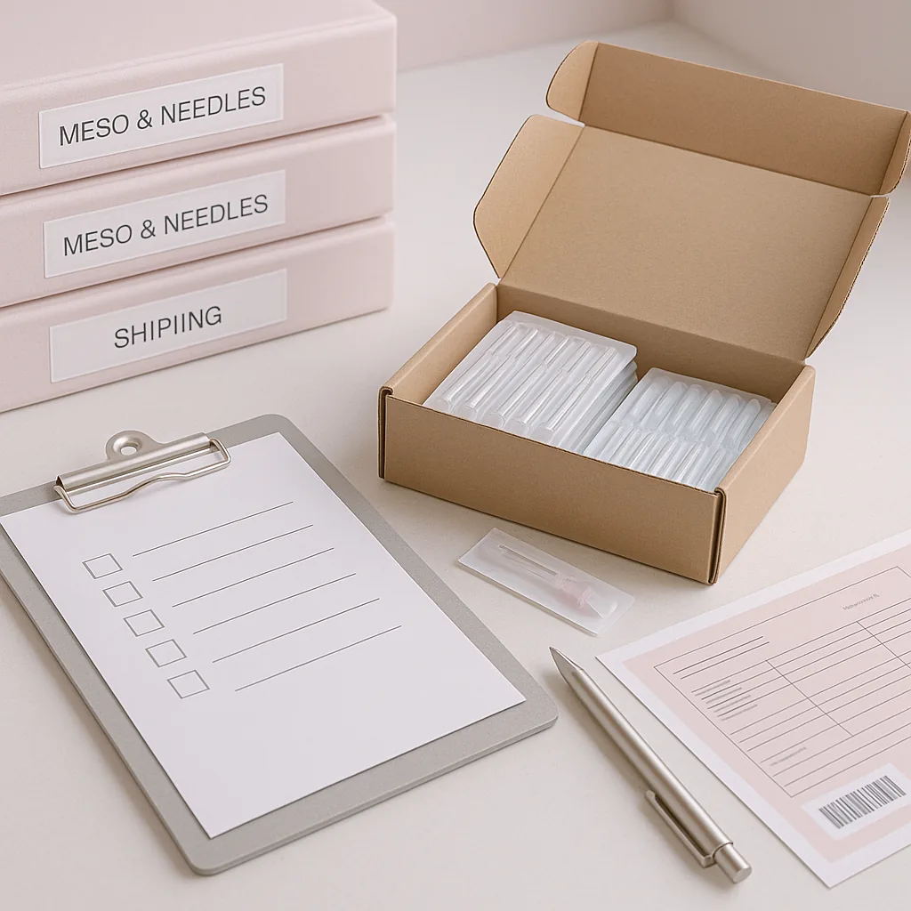

Learn how to effectively source 32g meso needles for your clinic. This guide covers key considerations, buyer scenarios, and logistics for wholesale orders.
When sourcing medical supplies, particularly specialized items like the 32g meso needle for clinics, it’s crucial to understand the nuances of procurement. Buyers often face challenges in ensuring they receive high-quality products that meet their specific needs. The consequences of a poorly sourced product can range from ineffective treatments to potential safety hazards, making it imperative to approach the ordering process with diligence. This guide aims to simplify the ordering process by outlining essential factors to consider before placing an order with a wholesale supplier.
The right 32g meso needle can significantly impact the efficiency and effectiveness of treatments offered in clinics and spas. Therefore, understanding what to check before making a purchase is vital for professional buyers who want to ensure they are making informed decisions. With the right knowledge, clinics can enhance patient satisfaction and streamline their operations.
Key Takeaways
- Evaluate the supplier’s reputation and product quality before placing an order.
- Understand the importance of packaging and labeling for compliance and safety.
- Confirm the minimum order quantity (MOQ) and how it aligns with your business needs.
- Assess shipping options and timelines to ensure timely delivery for your clinic.
- Keep track of batch numbers and expiry dates for effective inventory management.
What this guide covers
- Understanding 32g meso needles
- Buyer scenarios and order planning
- Comparison criteria for suppliers
- Checklist before requesting a quote
- Logistics: shipping and documentation
- MOQ, quotations, and reorder planning
- Frequently asked questions
What buyers should understand first

The 32g meso needle is a specialized device used in various aesthetic and medical procedures. Its fine gauge allows for precise injections, making it suitable for delivering serums and other substances into the skin. For clinics and spas, understanding the specifications and applications of these needles is essential for ensuring they meet the needs of their clientele. Buyers should focus on factors such as needle length, hub compatibility, and the overall quality of materials used in manufacturing. Additionally, familiarity with the different types of meso needles available can help buyers make informed choices that align with their treatment protocols.
Which buyers is this most relevant for?
This guide is particularly relevant for professional buyers in clinics, spas, resellers, and distributors who are responsible for sourcing medical supplies. Each of these business types may have different order planning needs. For instance, clinics may require regular replenishment of supplies to meet patient demand, while resellers might focus on bulk purchasing to maintain inventory for various clients. Understanding these scenarios helps buyers evaluate their specific needs and plan accordingly. Moreover, distributors may need to consider the diverse requirements of their client base, making it essential to stay informed about market trends and product innovations.
How to compare options before ordering
When comparing options for ordering 32g meso needles, consider the following criteria:
- Product Type: Ensure the needles meet your specific requirements in terms of gauge and length.
- Brand: Research reputable brands known for quality and reliability. Look for reviews and testimonials from other clinics.
- Packaging: Check if the needles come in sterile packaging that meets industry standards. Proper packaging is crucial for maintaining product integrity.
- Batch/Expiry Visibility: Ensure that the supplier provides clear information on batch numbers and expiry dates to facilitate effective inventory management.
- Supplier Communication: Evaluate how responsive and informative the supplier is during the inquiry process. Good communication can prevent misunderstandings.
- Destination Requirements: Consider any specific shipping or customs requirements for your location, which can affect delivery times and costs.
Buyer checklist before requesting a quote


- Identify the specific type and quantity of 32g meso needles needed for your clinic's procedures.
- Verify the supplier’s certifications and quality assurance processes to ensure compliance with industry standards.
- Confirm the MOQ and whether it aligns with your purchasing strategy; consider your clinic’s usage patterns.
- Request detailed product specifications and packaging information to ensure they meet your requirements.
- Inquire about shipping options, costs, and estimated delivery times to avoid disruptions in your supply chain.
- Check for availability of customer support for post-purchase inquiries, which can be crucial for resolving issues.
Shipping, packing and documentation questions
Logistics play a crucial role in the procurement process. Buyers should consider the following questions:
- What are the available shipping methods, and how do they affect delivery times and costs?
- Is the packaging compliant with safety and regulatory standards to protect the needles during transit?
- What documentation will accompany the shipment, such as invoices and certificates of compliance, to ensure smooth customs clearance?
- Are there any specific customs requirements for importing medical supplies into your country that need to be addressed?
- How will the supplier handle any potential shipping issues or delays, and what is their policy for such situations?
MOQ, quotation and reorder planning
When planning your orders, it’s essential to prepare the following details:
- Determine the quantities needed based on your clinic’s usage patterns and patient demand.
- Consider any variants of the 32g meso needle that may be required for different applications, such as different lengths or hub types.
- Provide destination details to the supplier to ensure accurate shipping quotes and avoid unexpected costs.
- Keep track of reorder points to maintain adequate inventory levels and prevent stockouts.
- Contact SOLA to confirm current availability and receive a wholesale quotation tailored to your needs. SOLA can assist in ensuring you have the right products at the right time.
FAQ
What is the difference between 32g meso needles and other gauges?
The primary difference lies in the thickness of the needle. A 32g needle is finer than larger gauges, allowing for more precise injections, which is crucial for certain procedures.
How can I ensure the quality of the meso needles I purchase?
Research suppliers, check for certifications, and request samples if possible to assess quality before placing a larger order. Quality assurance is key in medical supplies.
What should I do if I receive a damaged shipment?
Contact the supplier immediately to report the issue and inquire about their return or replacement policy. Prompt communication can expedite resolution.
Can I order smaller quantities than the MOQ?
Most suppliers have a set MOQ, but it’s worth discussing your needs with them to see if exceptions can be made, especially for first-time orders.
How often should I reorder meso needles?
Reorder frequency will depend on your clinic's usage; monitor your inventory levels to determine the best schedule for your needs, ensuring you have a steady supply.
Contact SOLA for wholesale quotation via WhatsApp.
Planning a wholesale request?
Send product names, quantities and destination for a tailored discussion.
Contact SOLA on WhatsApp →General educational content for professional buyers. Not medical, legal, regulatory or import advice.